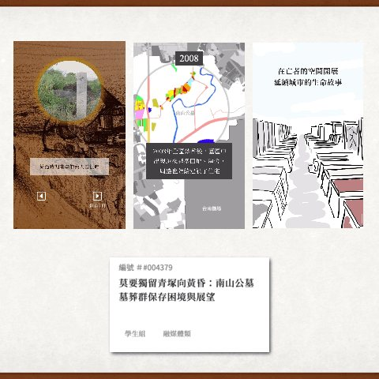

資料新聞與數位敘事 · 2022 — 2024Data journalism & digital storytelling · 2022 — 2024
用資料說故事：從課堂作品到新聞專題Telling stories with data, from class projects to published features
在台大新聞所與中央社期間，我負責專題裡的資料蒐集、分析與視覺化，也參與採訪寫作與網頁製作。以下是刊登於媒體的作品，以及部落格上的資料分析文章。 At NTU’s journalism school and at CNA I handled data collection, analysis and visualisation for features, and also reported, wrote and built the pages. Below are published pieces and data-analysis posts from my blog (most in Chinese).
刊登作品Published
-
棒球 12 強特別報導：火球投手暴增、3D 解析怪物級速球Premier12 special: the rise of the fireball pitcher 主責「遺珠」章節的球速與球種數據分析，整理 Baseball Savant、野球革命等公開數據。Led the pitch speed and pitch-type analysis for the “hidden gems” chapter, using Baseball Savant and other public data.
-
 為何個資外洩始終不減？電商篇Why do e-commerce data leaks keep happening? 主責資料處理與視覺化（R、Python），共同採訪與寫作。Led data processing and visuals (R, Python); co-reported and co-wrote.
為何個資外洩始終不減？電商篇Why do e-commerce data leaks keep happening? 主責資料處理與視覺化（R、Python），共同採訪與寫作。Led data processing and visuals (R, Python); co-reported and co-wrote. -
 公益團體捐款人個資外洩Donor data leaks at non-profits 同系列報導，分析公益團體的個資外洩情形。Companion story on personal-data leaks at charities.
公益團體捐款人個資外洩Donor data leaks at non-profits 同系列報導，分析公益團體的個資外洩情形。Companion story on personal-data leaks at charities. -

莫要獨留青塚向黃昏：南山公墓墓葬群保存困境與展望Nanshan Cemetery: the struggle to preserve a historic burial ground 負責網頁敘事與前端製作，以 mobile first 開發。Built the interactive, mobile-first story page. 第七屆全球華文永續報導獎 學生組融媒體類優等獎Merit Award, 7th Global Chinese Sustainability Journalism Awards -
 台灣觀眾 Netflix 觀劇全解析What Taiwan watches on Netflix 爬取 Netflix 排行資料，R 語言分析，並自行開發互動網頁。Scraped Netflix rankings, analysed them in R and built the interactive page.
台灣觀眾 Netflix 觀劇全解析What Taiwan watches on Netflix 爬取 Netflix 排行資料，R 語言分析，並自行開發互動網頁。Scraped Netflix rankings, analysed them in R and built the interactive page.